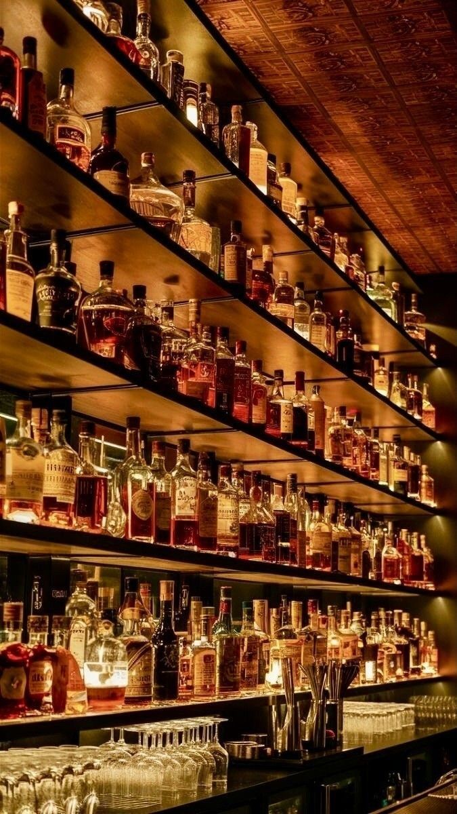
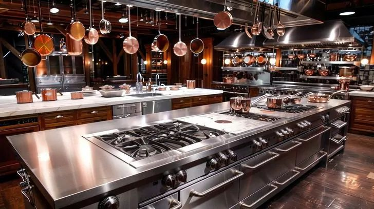
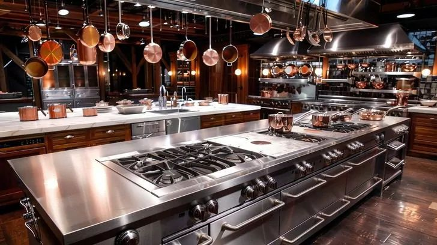

OVER THE YEARS THE GOLDEN PLATTER RASTAURANT ACHIEVED A RATING ⭐️⭐️⭐️⭐️☆ (4.5/5)
The Golden Platter is a hidden gem for anyone looking for a balance of elegance and comfort dining.
From the moment you step in, the atmosphere gives off a warm, inviting vibe — classy without being intimidating.
- Food (4.7/5):
The menu has a great variety. The fresh, crisp salads are a perfect start.
The main dishes, especially the steak, are flavorful, juicy, and cooked to perfection.
The meat selections stand out for both tenderness and seasoning.
Desserts are a highlight, the cheesecake is creamy and rich, the red velvet is moist,
and the carrot cake has just the right balance of spice and sweetness. - Service (4.6/5):
Staff are attentive, friendly, and well-trained, offering good recommendations without being pushy.
Waiting times are reasonable even when the place is busy. - Ambiance (4.5/5):
Golden accents and tasteful décor make the restaurant feel elegant,
while soft lighting creates a relaxed dining experience.
Perfect for both casual dinners and special occasions. - Value for Money (4.4/5):
Prices are fair given the quality of the dishes and the overall dining
Portions are generous without sacrificing presentation.
THE GOLDEN PLATTER IS HAPPY TO SERVE YOU ALL!

 
